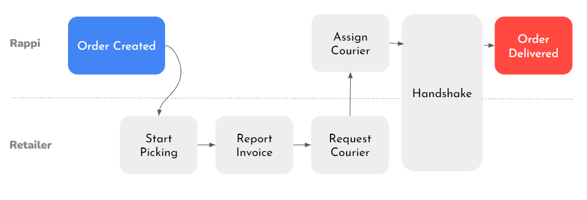
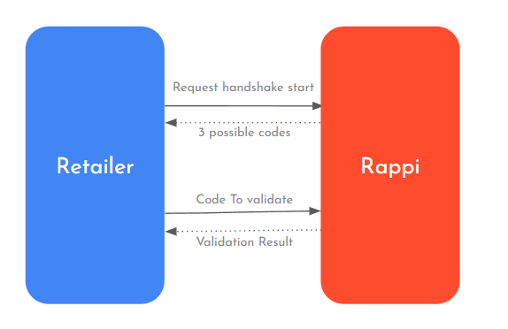
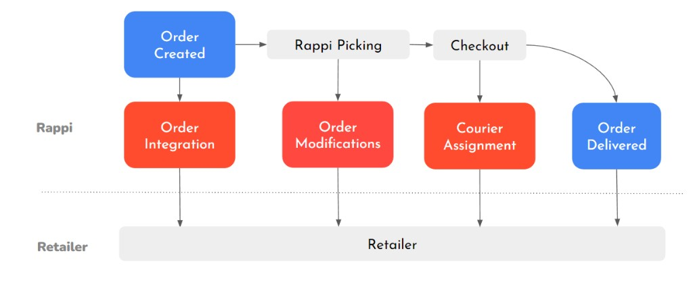

Open Orders
Receba pedidos da Rappi no seu OMS, acompanhe o ciclo de vida em tempo real e integre webhooks, polling e os eventos operacionais dos modelos Lite ou Full.
Primeiros passos com a API de Pedidos
O que é o Open Orders?
O Open Orders permite que o varejista receba pedidos da Rappi no próprio sistema (OMS/ERP), em vez de depender apenas de telas internas da plataforma.
Com isso, você pode usar a sua logística e operação para picking e entrega — mantendo o mesmo catálogo e a mesma governança de estoque que já utiliza na Rappi.
A integração é em tempo real: novos pedidos e mudanças de estado trafegam como eventos entre a Rappi e o seu backend. Pedidos agendados podem chegar com antecedência, ajudando a espalhar a carga operacional ao longo do dia.
O Open Orders é adequado para a sua operação?
Antes de iniciar a integração, é importante avaliar se sua operação possui a estrutura necessária para suportar o modelo Open Orders. Considere os seguintes pontos:
- Sua empresa já possui uma integração de inventário funcional com a Rappi?
- O controle de estoque das lojas é eficiente o suficiente para minimizar rupturas?
- Seu sistema POS/ERP consegue processar pedidos oriundos de canais externos?
- Sua equipe operacional está preparada para lidar com ações sensíveis ao tempo, garantindo o correto cumprimento dos pedidos?
- Você possui uma equipe de desenvolvimento — interna ou terceirizada — capaz de implementar, manter e oferecer suporte à integração com a Rappi?
Checklist de Integração
Antes de ir para endpoints, valide estes pontos com o time de produto, operações e engenharia:
- Mapear o ciclo de vida do pedido e o impacto de cada evento no app (cliente final e entregador).
- Traduzir eventos internos do seu OMS (WMS/POS) para os eventos da Rappi e vice-versa.
- Listar limitações do ERP/picking para exceções (ruptura, troca, cancelamento parcial) e definir plano B.
- Implementar webhook idempotente (retentativas, assinatura se aplicável, logs) para ingestão de pedidos.
- Garantir que toda mudança operacional relevante volte para a Rappi no modelo Full (e confirmar ACK quando exigido).
Modelos de operação (Lite e Full)
O Open Orders oferece dois modos. A escolha define quem inicia as mudanças de status e quais ações de API estão disponíveis.
Orders Lite
No Lite, a Rappi concentra o picking nas soluções próprias. O seu sistema recebe notificações e acompanha o pedido, mas não altera o fluxo operacional via API de Open Orders.
Compatível com picking da Rappi (ex.: Shopper App, Mi Tienda, RT Picking, Cashless).
Orders Full
No Full, o varejista opera no OMS próprio e devolve eventos para a Rappi (picking, NF, entregador, etc.). Há mais autonomia — e mais responsabilidade de sincronismo.
Não é compatível com picking nativo da Rappi: quem conduz a separação é a sua operação.
Entendendo o Ciclo de Vida do Pedido
Visão Geral dos Pedidos
Todos os pedidos na Rappi são tratados como um fluxo sequencial de eventos. Um pedido comum passa por diferentes etapas desde sua criação até a entrega ao cliente final.

Os eventos do fluxo são divididos em dois tipos principais:
Eventos da Rappi
São eventos gerados diretamente pela plataforma da Rappi durante o processamento do pedido.
-
order_created— Notifica a criação de um novo pedido e envia todas as informações relacionadas a ele. -
courier_assigned— Informa que um entregador (RT) foi atribuído ao pedido e está a caminho da loja. -
order_finished— Indica que o pedido foi entregue com sucesso ao cliente final.
Eventos do Varejista
São eventos gerados pelo sistema de gerenciamento de pedidos (OMS) do varejista ou pela solução de picking utilizada na operação.
-
start_picking— Notifica que a equipe da loja iniciou a separação dos produtos do pedido. -
report_invoice— Informa que a separação foi concluída e que a documentação fiscal (NF ou comprovante) já está disponível conforme o seu processo. -
request_courier— Solicita à Rappi o início do processo de atribuição de entregador para o pedido.
Recebimento de Pedidos
A Rappi disponibiliza duas formas principais para que os varejistas recebam pedidos e atualizações em tempo real:
- Webhook de Eventos de Pedido
- Endpoint de Polling
Esses métodos podem ser utilizados separadamente ou em conjunto, garantindo maior confiabilidade no recebimento dos eventos.
| Método | O que é | Quando usar |
|---|---|---|
| Webhook | A Rappi envia um POST para a sua URL quando há um evento novo. |
Como canal principal — menor latência e melhor experiência operacional. |
| Polling | O seu sistema consulta periodicamente a API da Rappi. | Como contingência (fila, falha de rede, reprocessamento, auditoria). |
Webhook de Eventos de Pedido
Ao configurar um webhook para pedidos da Rappi, sua operação poderá receber os pedidos automaticamente assim que forem criados na plataforma.
A criação do pedido ocorre através de uma requisição POST enviada para a URL configurada pelo
varejista, utilizando o endpoint:
POST https://your-url.com/ordersO identificador do pedido (order_id) não é enviado na URL, mas sim no corpo da requisição.
O payload enviado contém todas as informações relevantes do pedido, incluindo:
- Dados da loja
- Informações do cliente
- Endereço de entrega
- Produtos e combos
- Forma de pagamento
- Informações do entregador
- Status do pedido
- Data de criação
- Eventos relacionados ao pedido
Pedidos Agendados — campo place_at
O campo place_at é utilizado para identificar pedidos agendados.
Pedidos Imediatos (NOW Orders)
Quando o pedido não é agendado, o campo será enviado vazio ou nulo:
"place_at": ""ou
"place_at": nullPedidos Agendados
Para pedidos programados, o campo conterá a data e horário agendados:
"place_at": "2025-04-03T12:00:00Z"Informações de Identificação Pessoal
Quando necessário, informações pessoais — como CPF — podem ser enviadas no campo
identification.number, capturado diretamente no fluxo de checkout do aplicativo.
Endpoint de Polling
O método de polling permite consultar de forma proativa os pedidos e eventos ativos na plataforma da Rappi.
Ao realizar uma requisição GET para o endpoint abaixo, serão retornados todos os pedidos
pendentes ainda não confirmados pelo varejista:
GET {country_url}/api/open-api/v1/ordersTambém é possível consultar um pedido específico utilizando:
GET {country_url}/api/open-api/v1/orders/{order_id}O retorno seguirá exatamente o mesmo formato JSON enviado pelo webhook.
Limite de Requisições (Rate Limit)
Por padrão, os varejistas possuem um limite de:
100 requisições por minuto
Esse limite pode ser ajustado mediante solicitação à Rappi.
Status do Pedido
O campo status presente tanto no webhook quanto no endpoint de polling indica a etapa atual do
pedido dentro do fluxo operacional.
Os possíveis valores são:
| Status | Descrição |
|---|---|
created |
Pedido ativo, aguardando separação ou em processo de separação |
invoice_reported |
Separação concluída e cesta final de produtos definida |
finished |
Pedido entregue ao cliente final |
canceled |
Pedido cancelado pela Rappi ou pelo varejista |
Qual combinação usar na prática?
A escolha depende do seu OMS e da maturidade de observabilidade (logs, alertas, filas). A recomendação da Rappi é objetiva:
- Webhook como principal mecanismo de recebimento de eventos
- Polling como mecanismo complementar e de contingência
Se um evento não chegar no webhook, o polling ajuda a detectar lacunas e recuperar o estado sem depender só de retentativas “cegas”.
Gerenciamento de Pedidos
Existem dois modelos de gerenciamento de pedidos disponíveis no Open Orders:
FULL
No modelo FULL, o varejista utiliza suas próprias ferramentas e sistemas (OMS) para realizar a separação dos pedidos.
Nesse cenário, o varejista é responsável por enviar atualizações à Rappi sobre cada etapa do processo operacional.
LITE
No modelo LITE, a separação dos pedidos é realizada utilizando as soluções disponibilizadas pela própria Rappi.
Nesse caso, as atualizações dos eventos operacionais são enviadas pela própria plataforma ao varejista.
Pedido Entregue
Assim como ocorre no processo de atribuição de entregador, a finalização do pedido também é enviada via
POST para o webhook configurado.
Quando o pedido é concluído:
- o campo
statuspassa a possuir o valorfinished - o campo
delivered_atrecebe a data e horário da entrega
{
"delivered_at": "2023-02-10T12:34:07Z"
}Eventos no Open Orders FULL
Esta seção vale para operações no modelo Full: você confirma o que recebeu da Rappi, atualiza o estado do pedido na API e conclui com handshake na retirada pelo entregador.
Ciclo de Vida do Pedido — Orders FULL
O modelo Orders FULL foi desenvolvido para operações que utilizam uma solução própria de separação (picking). Nesse cenário, a equipe da loja gerencia os pedidos diretamente no sistema do varejista (OMS), desde o recebimento até a entrega ao entregador da Rappi.
Características do Orders FULL
Essa integração exige que o varejista possua:
- Um sistema próprio de gerenciamento de pedidos (OMS)
- Uma solução interna de picking
- Equipes treinadas para visualizar, processar e atualizar pedidos em tempo real
Nesse modelo, o varejista é responsável por enviar à Rappi as atualizações referentes aos eventos operacionais do pedido.
Confirmação de Eventos (Acknowledgement)
Todos os eventos enviados pela Rappi precisam ser confirmados pelo varejista. Isso garante que o pedido foi recebido e processado corretamente.
Existem duas formas de confirmação:
Confirmação Implícita
A confirmação implícita ocorre através da resposta do webhook. Sempre que o varejista responder ao webhook com um código HTTP de sucesso (200 a 299), o evento será automaticamente considerado confirmado.
Exemplo de resposta válida:
{
"status": 200
}ou simplesmente:
{}Confirmação Explícita
A confirmação explícita é utilizada quando:
- Não existe webhook configurado
- O webhook falha
- A resposta HTTP não é recebida corretamente
Nesse caso, é necessário enviar manualmente uma requisição para o endpoint de confirmação.
Endpoint de confirmação
POST {country_url}/api/open-api/v1/orders/acknowledgePayload
{
"acknowledgments": [
{
"order_id": 1234567,
"event_uuid": "00000000-0000-0000-0000-000000000000"
}
]
}not_found_acknowledgements com status 406 Not Acceptable.
UUID dos Eventos
Cada evento gerado pela Rappi possui um identificador único: event_uuid.
Nas chamadas que alteram o pedido, use sempre o UUID mais recente no cabeçalho — assim a Rappi garante que você está reagindo ao estado atual, não a um evento antigo.
| Evento | Status do Pedido | Identificação |
|---|---|---|
| Order Created | created |
Primeira notificação |
| Product Modifications | created |
Alterações no array products |
| Courier Assigned | created ou invoice_reported |
Campos do objeto courier preenchidos |
| Order Canceled | canceled |
Campo status |
| Order Finished | finished |
Campo status |
Os eventos Order Canceled e Order Finished encerram o fluxo do pedido e não precisam ser confirmados.
Eventos Não Confirmados
Alguns eventos são considerados críticos para a operação.
Caso a Rappi identifique que um evento importante não foi confirmado dentro do tempo configurado (por padrão, 20 minutos), o pedido poderá ser cancelado automaticamente.
Os principais eventos críticos são:
order_created- Eventos de modificação de produtos
remove_productremove_product_units
Atualização do Estado do Pedido
Após o recebimento do pedido, o varejista deve atualizar o progresso operacional através dos endpoints apropriados.
Início da Separação (start_picking)
Esse evento deve ser enviado quando a equipe da loja iniciar a separação dos produtos.
Endpoint
POST {country_url}/api/open-api/v1/orders/{order_id}/start_pickingPayload
{
"picking_time": 15
}
O campo picking_time representa o tempo estimado de separação em minutos. Caso não exista
estimativa disponível, recomenda-se utilizar o valor padrão de 15 minutos.
Finalização da Separação (report_invoice)
Informa que a separação foi concluída e que a NF ou comprovante já está disponível conforme o seu processo.
Endpoint
POST {country_url}/api/open-api/v1/orders/{order_id}/report_invoicePayload
{
"total_price": 12.5,
"image_url": "image.com"
}Observações
- O separador decimal deve ser
"." - Não utilizar separador de milhares
- O campo
image_urlé opcional
report_invoice, a cesta de produtos é bloqueada e não poderá mais sofrer
alterações.
Cancelamento de Pedido
Caso seja necessário cancelar um pedido após sua criação, utilize o endpoint abaixo:
Endpoint
POST {country_url}/api/open-api/v1/orders/{order_id}/cancelPayload
{
"type": "reason",
"details": {}
}Remoção de Produtos (Cancelamento Parcial)
Durante a separação, pode ocorrer indisponibilidade de produtos no estoque.
Remoção Total de Produto — quando não há nenhuma unidade disponível do produto.
DELETE {country_url}/api/open-api/v1/orders/{order_id}/products/{product_id}O endpoint aceita corpo vazio.
Remoção Parcial de Unidades — quando existe quantidade inferior à solicitada pelo cliente.
PATCH {country_url}/api/open-api/v1/orders/{order_id}/products/{product_id}/quantityPayload para produtos unitários
{
"units": 2
}Payload para produtos por peso
{
"grams": 250
}Substituições de Produtos
Atualmente, o modelo Open Orders FULL não possui suporte nativo para substituições de produtos. Caso sua operação dependa desse fluxo, será necessário utilizar outra solução de picking.
Atribuição de Entregador
Para continuar o fluxo logístico, é necessário solicitar um entregador da Rappi.
Solicitação de Entregador (request_courier)
POST {country_url}/api/open-api/v1/orders/{order_id}/request_courierPayload
{
"store_id": 10,
"vehicle_type": "car"
}Tipos de veículo disponíveis
motorbikecarbicycle
Evento courier_assigned
Quando o entregador for atribuído, a Rappi enviará uma atualização via webhook preenchendo o objeto
courier do pedido.
"courier": {
"phone": "18003334444",
"last_name": "Johnson",
"first_name": "Jane",
"vehicle_type": "motorbike"
}Processo de Handshake
O handshake é o processo de validação utilizado para confirmar que o entregador correto está retirando o pedido.
Aplica-se ao fluxo Full após picking, NF e atribuição de entregador — é a última barreira antes de liberar a mercadoria na loja.

Solicitação de Handshake
Endpoint
POST {country_url}/api/open-api/v1/orders/{order_id}/handshakeResposta
{
"codes": [
"033903",
"286928",
"788069"
],
"expires_at": "2021-06-18T16:42:03Z"
}Apenas um dos códigos é válido e será enviado ao entregador no aplicativo da Rappi.
Regras do Handshake
O handshake deve ser iniciado somente quando:
- O pedido estiver totalmente separado
- A nota fiscal tiver sido emitida
- Um entregador estiver atribuído ao pedido
- O entregador já estiver presente na loja
Além disso:
- Os códigos expiram em 5 minutos
- Após a expiração, novos códigos precisam ser gerados
Validação do Handshake
Endpoint
POST {country_url}/api/open-api/v1/orders/{order_id}/handshake/validatePayload
{
"code": "788069"
}Se o código estiver correto:
- A API retornará status 204
- O pedido poderá ser entregue ao entregador
Caso contrário, será retornado erro 400 contendo:
- Novos códigos disponíveis
- Tempo de expiração
- Quantidade restante de tentativas
Principais Códigos de Erro
| Código | Status | Descrição |
|---|---|---|
invalid_handshake_code |
400 | Código de handshake inválido |
order_not_found |
404 | Pedido não encontrado |
invalid_status |
409 | Status atual não permite a operação |
handshake_already_started |
208 | Processo de handshake já iniciado |
no_validation_retries_left |
406 | Limite de tentativas excedido |
no_courier_assigned |
406 | Nenhum entregador atribuído |
product_not_found_in_order |
404 | Produto não encontrado no pedido |
price_difference_exceeds_percentage_limit |
400 | Diferença de preço acima do limite permitido |
substitutions_not_configured |
403 | Substituições não configuradas |
Eventos no Open Orders LITE
Ciclo de Vida do Pedido — Orders LITE

O modelo Orders LITE foi desenvolvido para varejistas que desejam uma integração predominantemente informativa ou que utilizam soluções específicas de separação (picking) e checkout.
Diferentemente do modelo FULL, o Orders LITE não permite alterações operacionais nos pedidos através da API, funcionando principalmente como um mecanismo de consulta e monitoramento dos eventos gerados pela Rappi.
Características do Orders LITE
O Orders LITE é compatível com diferentes soluções disponibilizadas pela Rappi, incluindo:
- Shopper App
- Mi Tienda
- RT Picking
- Cashless
Nesse modelo:
- É possível utilizar webhooks para receber notificações de pedidos
- É possível consultar pedidos via polling
- Não é permitido atualizar, cancelar ou modificar pedidos pela API
Comparativo — Orders FULL vs Orders LITE
| Funcionalidade | FULL | LITE |
|---|---|---|
| Consulta de Pedidos via Polling | ✅ | ✅ |
| Início de Picking | ✅ | ❌ |
| Remoção de Produtos | ✅ | ❌ |
| Remoção de Quantidades | ✅ | ❌ |
| Cancelamento de Pedido | ✅ | ❌ |
| Reporte de Nota Fiscal | ✅ | ❌ |
| Notificação de Pedido Criado (Webhook) | ✅ | ✅ |
| Notificação de Entregador Atribuído | ✅ | ✅ |
| Notificação de Pedido Entregue | ✅ | ✅ |
| Notificação de Invoice Reported | ❌ | ✅ |
| Notificações Internas de Modificação de Pedido | ✅ | ✅ |
Webhook de Eventos de Pedido (LITE)
O contrato é o mesmo da seção Recebimento de Pedidos. Abaixo, um resumo do que o time precisa lembrar no contexto Lite:
Ao configurar um webhook para pedidos da Rappi, os pedidos serão enviados automaticamente assim que forem
criados na plataforma. A criação ocorre via POST para a URL configurada:
POST https://your-url.com/ordersO identificador do pedido (order_id) não faz parte da URL e é enviado no corpo da requisição.
O payload inclui dados da loja, cliente, endereço, produtos, entregador, pagamento, status, criação e event_uuid.
Pedidos Agendados
O campo place_at indica se o pedido foi agendado.
Pedidos Imediatos (NOW Orders)
"place_at": ""Pedidos Agendados — quando programado, o campo trará data e horário agendados para entrega.
Informações de Identificação Pessoal
Quando necessário, dados como CPF podem ser enviados em identification.number, coletados no
checkout do app da Rappi.
Evento courier_assigned
"courier": {
"phone": "18003334444",
"last_name": "Johnson",
"first_name": "Jane",
"vehicle_type": "motorbike"
}Pedido Entregue
Quando o pedido for entregue, a Rappi enviará atualização via webhook: status como
finished e delivered_at preenchido.
{
"delivered_at": "2023-02-10T12:34:07Z"
}Endpoint de Polling (LITE)
Além do webhook, há endpoint de polling para consulta proativa. Cada país possui URL base diferente; é obrigatório autenticar antes de consumir os endpoints.
Consulta de Pedidos Pendentes
GET {country_url}/api/open-api/v1/ordersRetorna pedidos pendentes e não confirmados do varejista autenticado.
Consulta de Pedido Específico
GET {country_url}/api/open-api/v1/orders/{order_id}O retorno segue o mesmo schema JSON do webhook.
Rate limit: por padrão, 100 requisições por minuto (ajustável mediante solicitação).
Status do Pedido (LITE)
O campo status representa a etapa atual. No modelo LITE, os possíveis valores são:
| Status | Descrição |
|---|---|
created |
Pedido ativo aguardando separação ou em processo de separação |
invoice_reported |
Separação concluída e cesta final definida |
finished |
Pedido entregue ao cliente final |
Boas práticas de recebimento no Lite
A mesma recomendação da seção Recebimento — qual combinação usar vale aqui: webhook como principal e polling como contingência.
Referência de Cancelamento
Estrutura Básica de Cancelamento
Para cancelar um pedido no Open Orders, utilize o seguinte endpoint:
POST {country_url}/api/open-api/v1/orders/{order_id}/cancelExemplo utilizando cURL:
curl --location 'https://{COUNTRY}/api/open-api/v1/orders/{YOUR_ORDER}/cancel' \
--header 'Authorization: Bearer {YOUR_TOKEN}' \
--header 'event_uuid: {LAST_EVENT_UUID}' \
--header 'Content-Type: application/json' \
--data '{
"type": "technical_issues",
"details": {}
}'Estrutura do Payload
| Campo | Descrição |
|---|---|
type |
Motivo do cancelamento |
details |
Informações adicionais relacionadas ao motivo |
details pode ser {}. Alguns tipos exigem informações adicionais.
Motivos de Cancelamento
Motivo (type) |
Descrição | Requer details? |
|---|---|---|
technical_issues |
Problemas técnicos no sistema do varejista impedem o avanço do pedido | ❌ |
total_products_removed |
Todos os produtos do pedido foram removidos | ❌ |
order_id_duplicated |
O pedido já foi criado anteriormente no sistema do varejista | ✅ |
products_not_found |
Produtos do pedido não correspondem aos IDs do catálogo do varejista | ✅ |
products_stock_out |
Todos os produtos do pedido estão sem estoque | ✅ |
products_price_difference |
Diferença de preço identificada nos produtos do pedido | ✅ |
store_not_found |
ID da loja inválido ou não reconhecido | ❌ |
total_value_inconsistent |
Soma dos preços dos produtos não corresponde ao valor total do pedido | ❌ |
user_first_name |
Nome do cliente inválido ou ausente | ❌ |
user_last_name |
Sobrenome do cliente inválido ou ausente | ❌ |
user_identification |
Documento do cliente inválido ou ausente | ❌ |
user_email |
E-mail do cliente inválido ou ausente | ❌ |
user_phone_number |
Telefone do cliente inválido ou ausente | ❌ |
address_street_address |
Endereço inválido ou ausente | ❌ |
address_number |
Número do endereço inválido ou ausente | ❌ |
address_neighborhood |
Bairro inválido ou ausente | ❌ |
address_city |
Cidade inválida ou ausente | ❌ |
address_state |
Estado inválido ou ausente | ❌ |
address_zip_code |
CEP inválido ou ausente | ❌ |
delivery_time |
Horário de entrega inválido | ❌ |
departure_time |
Horário de saída inválido | ❌ |
Exemplos de details por tipo
Pedido Duplicado (order_id_duplicated)
{
"type": "order_id_duplicated",
"details": {
"retail_order_id": "12345",
"created_at": "2023-01-01T00:00:00Z"
}
}Produtos Não Encontrados (products_not_found)
{
"type": "products_not_found",
"details": {
"products": [
"0001",
"0002",
"0003"
]
}
}Produtos Sem Estoque (products_stock_out)
{
"type": "products_stock_out",
"details": {
"products": [
{
"product_id": "0001",
"available": 0
},
{
"product_id": "0002",
"available": 1
}
]
}
}O campo available representa a quantidade ainda disponível do produto.
Diferença de Preço (products_price_difference)
{
"type": "products_price_difference",
"details": {
"difference_threshold": 15,
"products": [
{
"product_id": "0001",
"price_difference": 2
},
{
"product_id": "0002",
"price_difference": 3
}
]
}
}| Campo | Descrição |
|---|---|
difference_threshold |
Limite percentual permitido para diferença de preço |
price_difference |
Diferença entre o preço real e o preço informado no pedido |